Caracteristícas
La ballena jorobada es un cetáceo misticeto, compartiendo familia con otras especies como la ballena azul, el rorcual común o el minke común. En 1756, el zoólogo francés Mathurin Jacques Brisson la bautizó como ballena de Nueva Inglaterra. Actualmente, su nombre científico toma este primer nombre pero en latín. Sin embargo, a comienzos del siglo XIX, comenzó a llamarse ballena yubarta o jorobada, debido a la curvatura que muestra su columna cuando se sumerge en el agua.
Las ballenas jorobadas presentan una anatomía muy especial, destacando sus grandes aletas pectorales, llegando a medir una tercera parte que el resto del cuerpo. En contraposición, su aleta dorsal es pequeña, mostrando formas que van desde similares a una hoz hasta ser prácticamente imperceptibles.
La cabeza de la ballena jorobada es única, siendo nudosa y bastante alargada, presenta unos bultos denominados tubérculos cefálicos que solo están presentes en esta especie. Su cola, que sale del agua cuando realiza las inmersiones, presenta un patrón exclusivo de cada ejemplar, en el cual se mezclan el blanco y el negro. El color de su cuerpo es variable en el vientre, yendo del blanco al negro o al moteado, pero en todos los individuos el dorso es negro.

Alimentación
La ballena jorobada tiene un sistema de alimentación bastante detallado conocido como alimentación con red de burbujas, las cuales atrapan los pequeños organismos que consumen: krill, salmón, arenque, caballas entre otros, esta masa de presas se levantarán y luego la ballena las devora.
Asimismo, contienen surcos en la garganta que abren y amplían cuando se alimentan y de esta forma pueden tomar grandes cantidades de agua. Su sistema de filtrado hace que su comida quede dentro y el agua fuera.
Se alimentan por temporada y muy poco cuando están migrando. Podrían consumir de 4.000 a 5.500 libras de alimento diariamente.

Comportamiento
Las ballenas jorobadas están nadando en supergrupos masivos y densos, súbitamente, mientras los científicos intentan descifrar a qué se debe este comportamiento.
Se trata de un fenómeno curioso que ha sido detectado en la costa de Sudáfrica por los investigadores y el público en general.
Su punto de encuentro está a una distancia lejana de donde las ballenas jorobadas usualmente pasan el verano en la Antártida. Los grupos oscilan entre 20 y 200 animales, concentrados en una sola actividad: alimentarse
“Cuando estás en un bote pequeño con 200 ballenas jorobadas a tu alrededor–son animales que miden 14 metros– y todas están saltando muy cerca tuyo, es realmente una experiencia increíble”, relató Ken Findlay, el investigador principal del inusual comportamiento.
Él y sus colegas del Departamento de Asuntos Ambientales de Sudáfrica creen que estos supergrupos que se alimentan juntos son un fenómeno de comportamiento relativamente reciente, según lo que escribieron en la revista científica PLOS One.

Reproducción
Las ballenas son mamíferos acuáticos de gran tamaño. Los machos no alcanzan la edad adulta y,
por lo tanto, la madurez sexual hasta los 7 o 10 años de edad. Mientras que las hembras son, generalmente,
más precoces, alrededor de los 5 o 7 años de edad.
Las gónadas femeninas, como en el resto de mamíferos, se encuentran en el interior del cuerpo de las hembras.
Los machos pueden exteriorizarlos, pero cuando nadan (la mayor parte del tiempo), permanecen
recogidos dentro de una cavidad especial que tienen.
Cuando llegan a la edad reproductora, las ballenas no se reproducen continuamente,
sólo durante una época del año, que dependerá del hemisferio donde vivan. Por ejemplo,
para saber cómo se reproducen las ballenas jorobadas, debemos acudir a la Bahía de Massachusetts,
aquí, las hembras pasan largos periodos de tiempo con sus crías ya que, a diferencia de otras especies
de ballenas, las ballenas jorobadas pueden tener entre 2 y 3 ballenatos cada vez
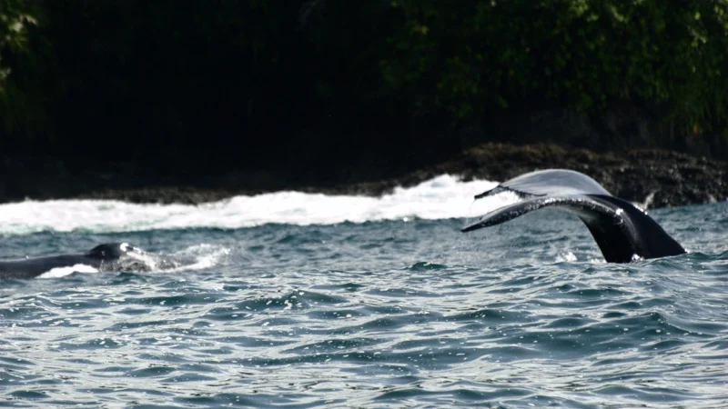

 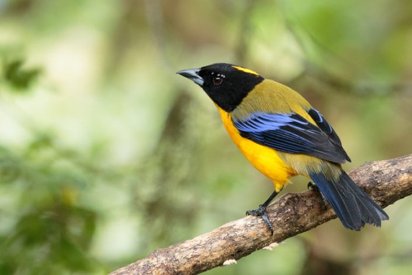
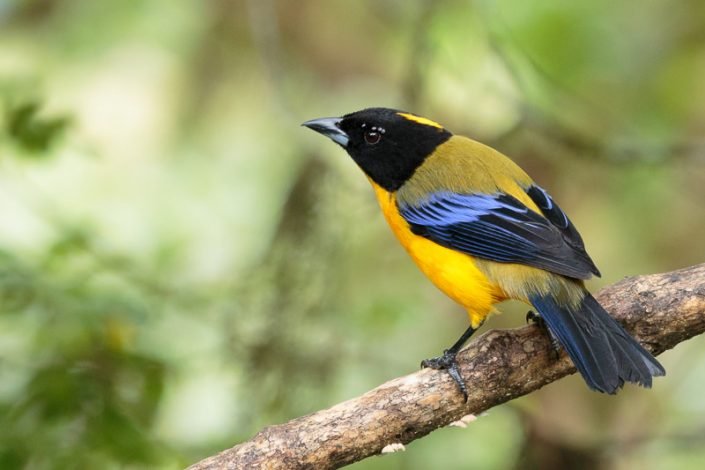
 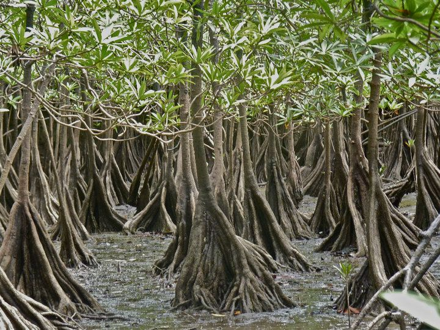
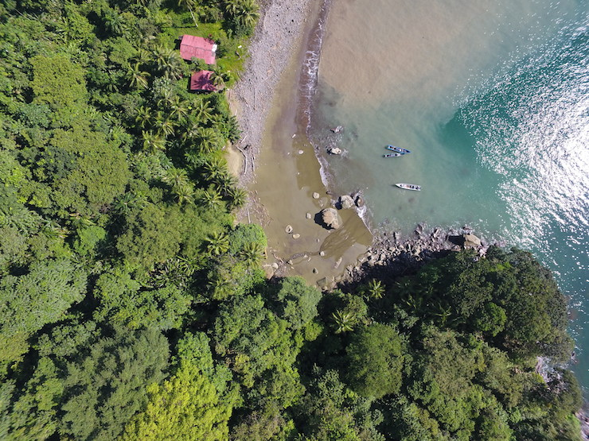
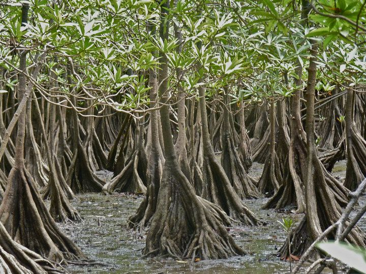
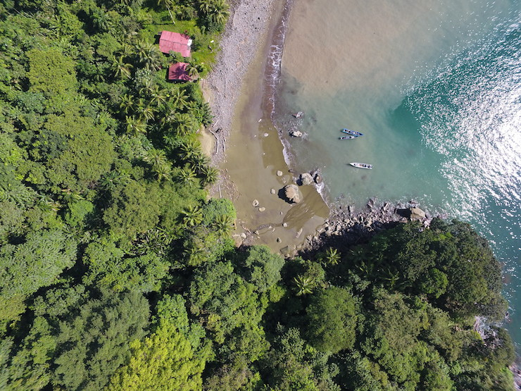
 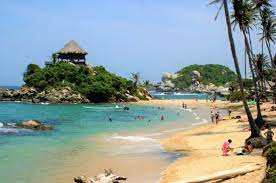
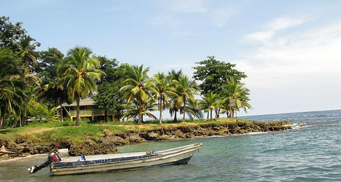
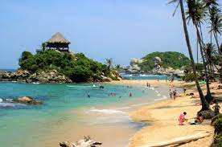
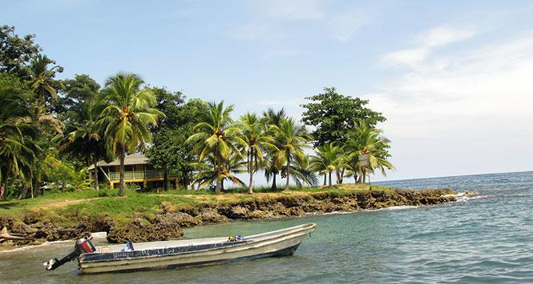